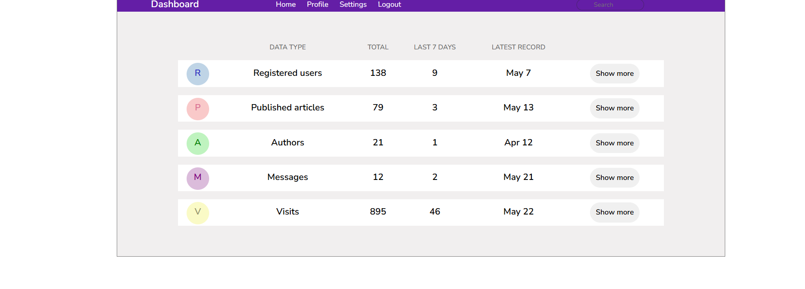
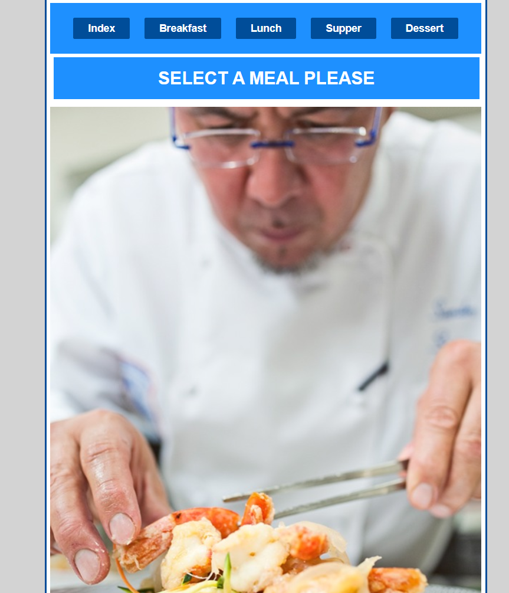

My Projects
As a developer and designer, I focus on creating digital solutions that are as organized as they are beautiful. Below are three projects that demonstrate my journey in building functional, user-centric web applications.

